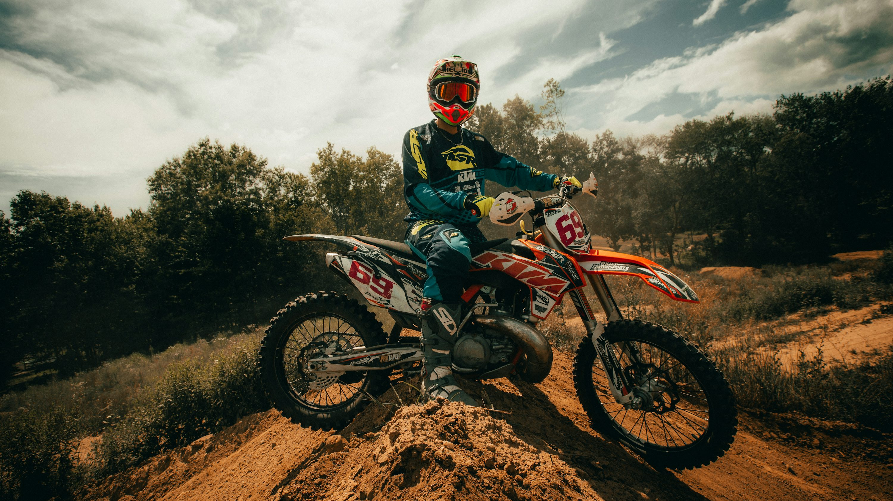

Bienvenido a Motos de Enduro
Descubre el apasionante mundo del enduro. Aquí encontrarás información, recomendaciones y consejos para disfrutar al máximo de tu moto en cualquier terreno.
¿Qué es el Enduro?
El enduro es una disciplina del motociclismo que combina velocidad, resistencia y habilidad para superar obstáculos naturales como piedras, barro y pendientes. Es ideal para quienes buscan aventura y contacto con la naturaleza.
Recomendaciones para tu Primera Enduro
- Usa siempre equipo de protección: casco, guantes, botas y protecciones.
- Elige una moto adecuada a tu nivel y tamaño.
- Revisa la presión de las llantas y el estado de los frenos antes de salir.
- Lleva agua y algo de comida ligera.
- Sal acompañado o avisa a alguien de tu ruta.
- Respeta la naturaleza y no dejes basura.
¿Qué llevar en una salida de Enduro?
- Herramientas básicas y kit de reparación de pinchazos.
- Botiquín de primeros auxilios.
- Mapa o GPS.
- Teléfono móvil con batería cargada.
- Repuestos esenciales: bujía, eslabón de cadena, etc.